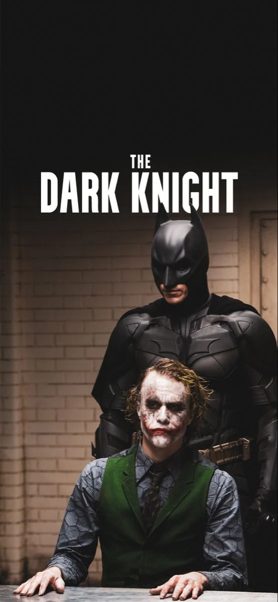

Gospel & Worship
Meskerem Getu · Tim Hughes
Faith-centered worship, uplifting Gospel, strong vocals, and live-worship energy.
The part of the website where the résumé stops talking.
A playlist with several branches and no interest in picking one lane.
Meskerem Getu · Tim Hughes
Faith-centered worship, uplifting Gospel, strong vocals, and live-worship energy.
Michael Jackson · Bruno Mars
Big hooks, rhythm, funk, stage presence, and pop that refuses to age.
Jorja Smith · Olivia Dean
Smooth, soulful, intimate, relaxed, and jazz-influenced.
Stormzy
UK grime and hip-hop, with Gospel influence never too far away.
Miles Davis · Mulatu Astatke
Jazz, improvisation, groove, and Ethio-jazz—the instrumental side of the playlist.
You won’t catch me anywhere near a gym bench. Maybe in 2019/27. Give me my AirPods and a ridiculously long walk instead.
If you need proof I actually move, you can find me on Strava.
View My Strava ↗Difo Dabo + Tire Siga.
Fresh, hot Difo Dabo is already a serious security vulnerability. Add Tire Siga (Ethiopian raw meat) to the equation and we’re no longer discussing reasonable decision-making.
Dark stories, difficult characters, sharp tension, and a completely fair Top 5.
The one. My all-time favorite.
Yes, all four count as one. No, that isn’t cheating.
Honorable mention.


Denis Villeneuve · Martin Scorsese · Steven Spielberg · David Fincher
If one of these names is behind the camera, I’m probably seated.

Denzel Washington · Robert De Niro · Al Pacino · Leonardo DiCaprio · Christian Bale · Brad Pitt
Viola Davis · Meryl Streep · Julia Roberts
Julia takes the top spot for me.
Manchester United first. Cristiano forever. Certain arguments are not open for negotiation.
My dad introduced me to United when I was five or six. It stuck.
His entire career is a blueprint for what a human being can achieve through sheer force of will. He was not born with the ultimate footballing blueprint; he built it in the gym, on the training pitch, and in his own mind. When you look at Ronaldo, you do not see a divine miracle. You see discipline. You see suffering. You see a man who decided he would not let anyone—not even nature—limit how great he could be.

Real Madrid. Zidane. Three Champions Leagues in a row.
Real Madrid 4–1 Juventus
Cardiff · 2017
Favorite player — Jude Bellingham
Favorite manager — Zinedine Zidane
Real Madrid is the biggest football club in the world.
CR7 is the greatest human being to touch a football.
New York City
Somewhere along the way, How I Met Your Mother convinced me that living in New York—with the late nights, familiar spots, ridiculous stories, and your people always somewhere nearby—might actually be the move.
Maybe the reality is different. I still want the New York version.

I low-key wish I never had to get married, but if it’s an absolute must, it’s happening at the Mandarin Oriental, Lago di Como, Italy.
No negotiation.